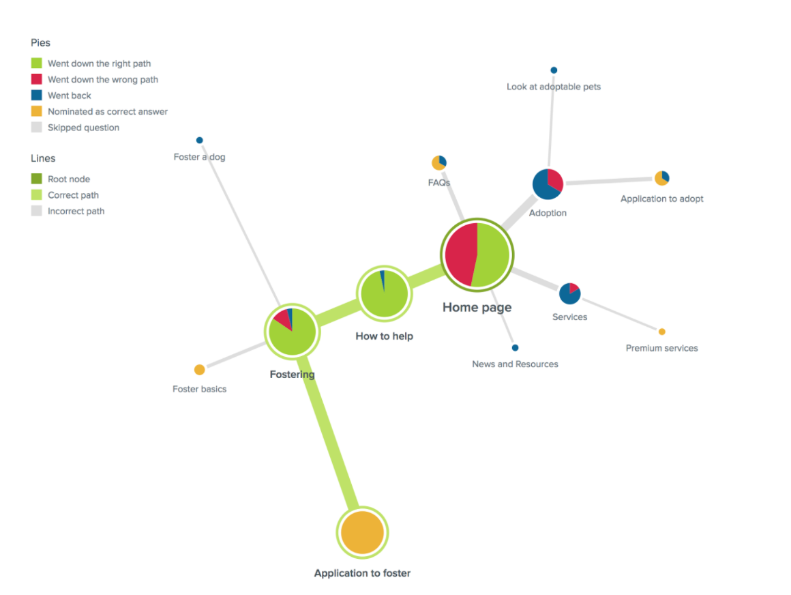
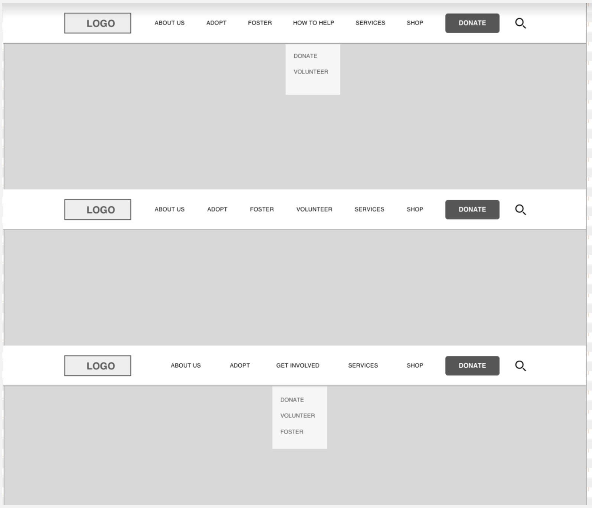
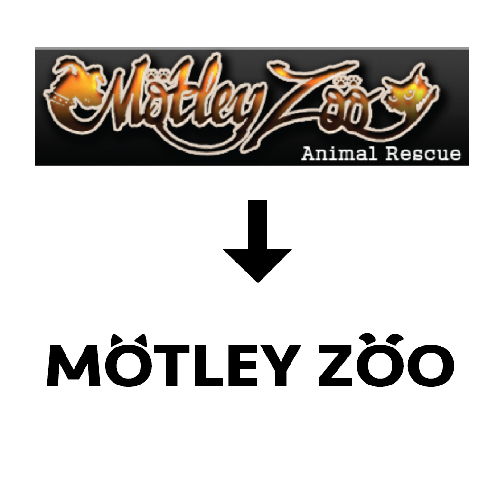
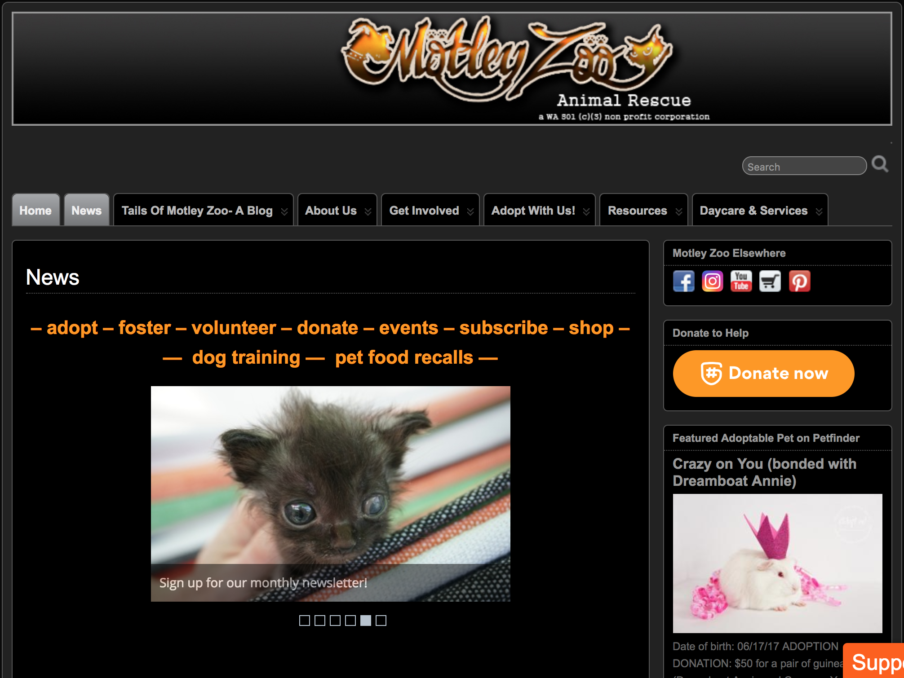

As a design exercise for a class called User-Centered Web Design, I helped redesign an active website for a local non-profit animal shelter called Motley Zoo. The website was chosen because of it's bad UX and room for improvement in the design.
Goals: To improve the Motley Zoo website. user experience. To help Motley Zoo increase donations, adoptions, and volunteering
Constraints: 10-week time constraint, limited communication opportunities with website owner.
Outcomes: Vastly improving the simplicity and user experience of website while maintaining and modernizing the Motley Zoo Brand.
User Research and Information Architecture: To begin this project we interviewed the owners of the website as well as users to determine the top tasks the website is used for. We determined the tasks to be adoption, fostering, volunteering, and donating money. Using this initial research we developed personas that represented the users executing these tasks. From there we began experimenting with different options for the information architecture that could help achieve our goal of decluttering the website and improving the user experience.
Prototyping and Usability Testing: Once we developed a clean and effective information architecture we began developing an interactive lo-fidelity prototype using Sketch + Invision. Using our prototype we began task-based usability testing with potential users. Our goal was to identify any navigation errors or usability problems. By using the feedback from our usability testing we iteratively improved our lo-fi prototype to improve the user experience and solve usability problems.
Brand Audit: As we moved into the process of creating a hi-fidelity prototype for the website, we knew would need to refine the Motley Zoo brand. The shelter has a very specific brand, pulling it's name from the 80's band Motley Crue, it seeks to present itself in an "edgy" "rock n' roll" manner. However, through our user research, we found that this intense branding was a deterrent to users either adopting from or supporting this non-profit. Thus, we knew we needed to improve the brand presentation while maintaining the identity of the organization.
Logo Redesign: The centerpiece of the Motley Zoo visual brand is the logo. The logo was a mess. It was hard to read, blurry, visually tacky and just plain ugly. Our goal was to redesign the logo in a way that fixed the usability issues while maintaining the brand associated with Motley Crue. We decided to play off the unique umlaut typography in the Motley Crue brand and mix in the reference to animals with the cute cat and dog ears. I believe it is a good exercise in simplifying and beautifying while maintaining the brand essence.
Hi-Fidelity Prototype (Look & Feel): The final step of our product was to pick fonts, a color scheme, and put it all together! I feel that this final product was well executed, beautiful, and usable... everything good UX should be!